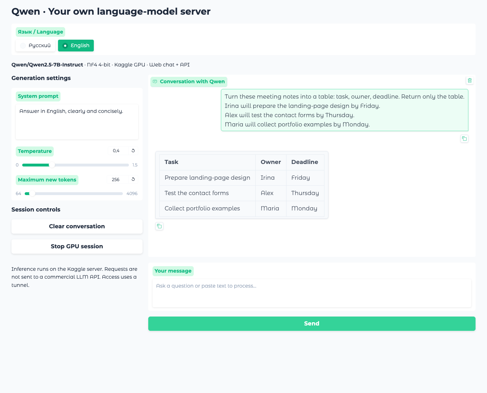

Qwen с открытыми весами работает в приватной сессии Kaggle. Управление через собственный веб-чат и API: системный промпт, параметры генерации, потоковые ответы и подключение своих приложений. Мощная видеокарта на компьютере пользователя не нужна.
Настоящий интерфейс и ответ Qwen на Kaggle: демонстрационные заметки встречи преобразованы в таблицу задач. Изображение открывается с увеличением в этой же вкладке.
7Bпроверенная модель Qwen2.5
4-bitквантование весов NF4
UI + APIчат и программный доступ
01 / ЗАДАЧА
Самостоятельно управлять моделью с обычного компьютера
Требовалось получить собственную среду работы с языковой моделью: задавать её поведение системным промптом, менять параметры ответа и подключать свои скрипты. При этом на ноутбуке нет подходящей видеокарты. Решение — запустить открытые веса на удалённом GPU и сделать два способа работы с одним движком: удобный чат для человека и API для приложений.
02 / РЕШЕНИЕ
01Запуск с компьютера
Менеджер готовит приватный пакет, выбирает модель и явно запрашивает ускоритель Kaggle.
02Модель на GPU
Веса и токенизатор загружаются в серверную среду. NF4 уменьшает требования к памяти.
03Чат или API
Человек работает в веб-интерфейсе, скрипт отправляет сообщения в формате chat completions.
04Ответ в процессе
Один движок выдаёт полный ответ или передаёт его частями по SSE. Настройки задаёт пользователь.
03 / ИНЖЕНЕРИЯ
От весов модели до работающего сервиса
Подобрать рабочую конфигурацию
Размер модели должен соответствовать памяти и программной среде видеокарты. Для проверенного запуска выбрана Qwen 7B с 4-битным NF4, вычислениями FP16 и автоматическим размещением весов. Сервер подтвердил сессию с двумя Tesla T4; это фактическое оборудование, а не только параметр в конфигурации.
Связать чат и программный доступ
Системный промпт и история сообщений приводятся к шаблону Qwen. FastAPI принимает запросы приложений, Gradio даёт интерфейс с историей, настройками и очисткой диалога. Обе стороны используют одну загруженную модель.
Передавать ответ по мере генерации
Модель генерирует текст в отдельном потоке. Сервер преобразует фрагменты в SSE-события: начало ответа, части текста и завершение. Клиент получает текст постепенно; ему не нужно ждать полного ответа.
Управлять доступом и ресурсами
У чата есть пароль, у API — ключ. Общая блокировка предотвращает одновременные конкурирующие генерации; параметры запросов проверяются до обработки. Менеджер получает ссылки готовой сессии, а остановка доступна через интерфейс и авторизованный endpoint.
04 / РЕЗУЛЬТАТ
Одна модель — два способа работы
В чате Qwen получила заметки о трёх задачах и вернула таблицу с ответственными и сроками. Через API проверены русский ответ, английская потоковая выдача, доступ по ключу и отклонение некорректного параметра. Скриншоты и ответы получены от настоящей модели на Kaggle.
Диалог на русском
Настройки и результат живого диалога: три задачи из демонстрационных заметок.
Диалог на английском

Тот же сценарий в английском интерфейсе; ответ заново сгенерирован моделью.
Подключение к собственным приложениям
Пример настоящего потокового запроса. В протоколе сохранены ответ модели и завершение SSE; адрес сессии и ключ не публикуются.
Запрос
{
"model": "qwen",
"messages": [
{
"role": "system",
"content": "Be concise and factual."
},
{
"role": "user",
"content": "Explain in three short bullet points how to turn meeting notes into action items."
}
],
"stream": true,
"max_tokens": 160,
"temperature": 0
}
Ответ QwenSSE · 33 chunks · [DONE]
- Identify specific tasks and assign them to responsible individuals. - Determine deadlines for each action item discussed. - Document all action items in a shared document or task management system.
Проверенная сессия: Qwen2.5-7B-Instruct, NF4, две Tesla T4. Полный протокол доступен вместе с исходниками.
Инференс выполняется загруженной моделью внутри Kaggle, без передачи запросов в API коммерческого поставщика LLM. В приложении нет отдельного фильтра модерации. При этом Qwen2.5-Instruct может отказывать в отдельных ответах, а площадка ограничивает ресурсы. Доступ через Gradio и Cloudflare использует прокси: это облачное развёртывание, а не полностью изолированная локальная система.
05 / ДЕМОНСТРАЦИЯ
Как это реализовано
Фрагменты настоящего кода показывают конфигурацию NF4, потоковый ответ и подготовку приватного запуска. В репозитории также есть менеджер сессии, клиент проверки API и клиент генерации промптов с экспортом.
Менеджер отправляет код в собственный приватный notebook. Для повторения нужны свой аккаунт Kaggle, доступный GPU и учётные данные CLI. Настройки и порядок подключения описаны в README.
Материалы RU/EN показывают реальное выполнение на Kaggle. Данные заметок вымышленные. Проверена конфигурация 7B; результаты не приписываются всем размерам модели. После получения доказательств демонстрационная GPU-сессия остановлена. Веса Qwen сторонние; опубликован код развёртывания и работы с ними.